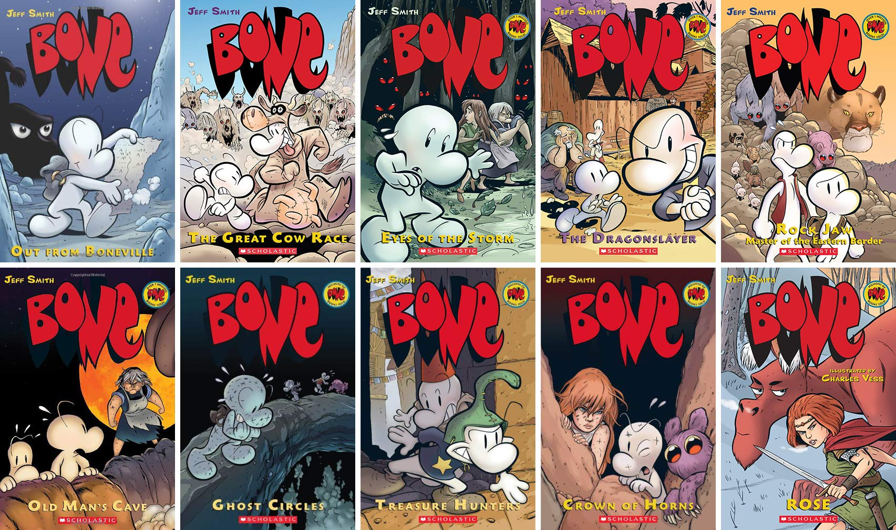

Graphic Novels
Named by Time magazine as one of the ten greatest graphic novels of all time, Jeff Smith's BONE series follows the incredible saga of an unwitting hero who must save an idyllic valley from the forces of evil. Filled with endearing characters, bizarre creatures, and heartbreaking dilemmas at every turn, these visually stunning books comprise a literary legend in the making.
Details
Bone #1: Out from Boneville
After being run out of Boneville, the three Bone cousins -- Fone Bone, Phoney Bone, and Smiley Bone -- are separated and lost in a vast, uncharted desert. One by one, they find their way into a deep, forested valley filled with wonderful and terrifying creatures. Eventually, the cousins are reunited at a farmstead run by tough Gran'ma Ben and her spirited granddaughter, Thorn. But little do the Bones know, there are dark forces conspiring against them and their adventures are only just beginning!
Bone #2: The Great Cow Race
In THE GREAT COW RACE, volume 2 of this 9-book epic, Fone Bone and his cousins plan to return home after visiting the village of Barrelhaven with Thorn and Gran'ma Ben. But Phoney risks everything on one last get-rich-quick scheme for the town's annual Great Cow Race. As usual, Phoney's plans go disastrously awry, and Boneville seems further away than ever. Meanwhile, ominous signs indicate that a war is brewing, and Fone finds himself helping his friends defend their valley from a formidable enemy.
Bone #3: Eyes of the Storm
In "Eyes of the Storm," volume three of the nine-book BONE saga, Lucius, Smiley, and Phoney survive an attack by the rat creatures and return safely to Lucius' tavern in Barrelhaven. Phoney, desperate to win a bet with Lucius, stokes the townspeople's fear of dragons and boasts that he is a professional dragonslayer.
Bone #4: The Dragon Slayer
Fone Bone confronts a host of dangers in Book 4 of the BONE saga, The Dragonslayer. He and Gran'ma Ben and Thorn have a terrifying encounter with Kingdok, ruler of the rat creatures. The Hooded One is inciting his army to full-scale war. Someone is continuing to haunt Thorn in her dreams. And then wise Gran'ma Ben disappears.
Bone #5: Rock Jaw
In this fifth volume of the BONE saga, Fone and Smiley Bone strike out into the wilderness to return a lost rat creature cub to the mountains. It doesn't take long before they run smack into Rock Jaw, "Master of the Eastern Border," an enormous mountain lion with a none-too-friendly disposition. Life gets even more complicated when they befriend a group of baby animals who are being orphaned by rat creature attacks. Everything comes to a head in an earth-shattering clash between Rock Jaw and Kingdok, the leader of the rat creatures.
Bone #6: Old Man's Cave
The thrilling BONE saga continues in book six. As war spreads through the valley, the Bone cousins join Gran'ma Ben and Lucius at Old Man's Cave to make a stand against the rat creatures.
Bone #7: Ghost Circles
A long-dormant volcano explodes, blacking out the sun, mowing down trees, and filling the land with soot and ash. The Lord of the Locusts has been released. Against this apocalyptic backdrop, the Bone cousins along with Thorn and Gran'ma Ben struggle to reach safe haven in the city of Atheia.
Bone #8: Treasure Hunters
The Bone cousins, Gran'ma Ben, and Thorn finally reach the city of Atheia, where they reunite with old friends and plan to thwart The Lord of the Locusts. The Pawan army has joined forces with Briar and the rat creatures, and danger increases as Thorn's visions get stronger. Meanwhile, Phoney Bone is convinced Atheia is a city rich in gold, and he is determined to find it!
Bone #9: Crown of Horns
It's full-fledged war as Briar, the rat creatures, and the Pawan army storm the city of Atheia. The Bone cousins, Thorn, and Gran'ma Ben are all there to defend the Valley and stop the return of the Lord of the Locusts. When Thorn goes inside a ghost circle, she hears a voice urging her to seek the Crown of Horns. What follows is another dangerous journey for Thorn and loyal Fone Bone as they race to the sacred grounds of the dragons, searching for the one thing that may save them all. This is the breathtaking conclusion to Jeff Smith's nine-book graphic novel series.